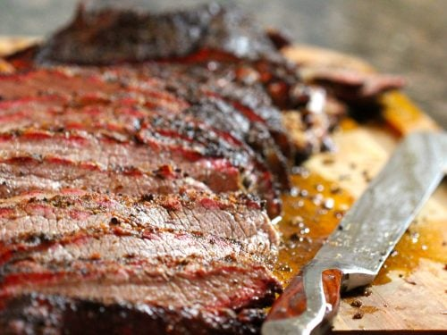

The Smoked Brisket Recipe for Your Sandwich!

A brisket is fairly simple, you just need a few ingredients.
Ingredients for a smoked brisket:
- 1lb of prime beef brisket
- Salt
- Pepper
- Garlic powder
- Butcher paper
Steps to prepare:
- Trim brisket to your liking.
- Season with salt, pepper, and garlic powder.
- Wrap brisket in butcher paper to keep all the juices in.
- Smoke at 225 degrees until the internal temperature is 202 degrees.
- Rest brisket for 1-2 hours.
- Slice brisket for sandwiches!